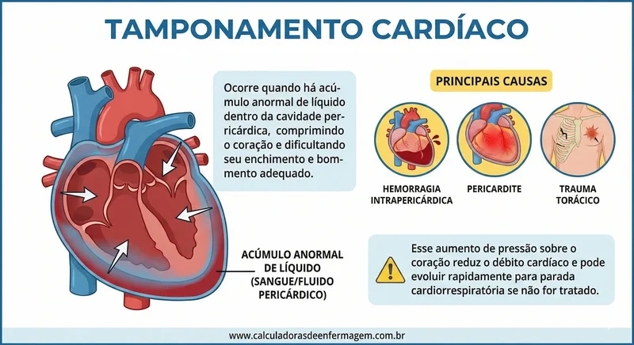
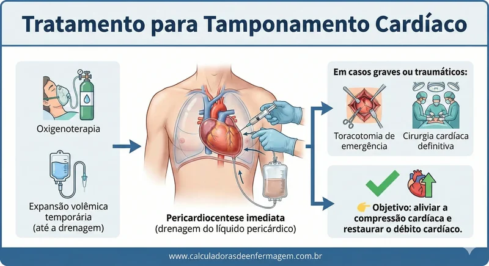
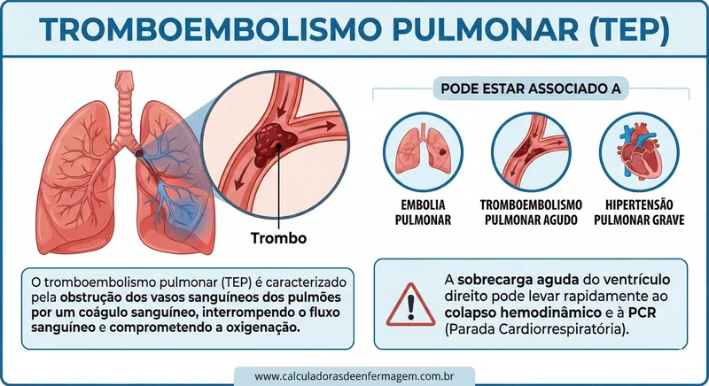
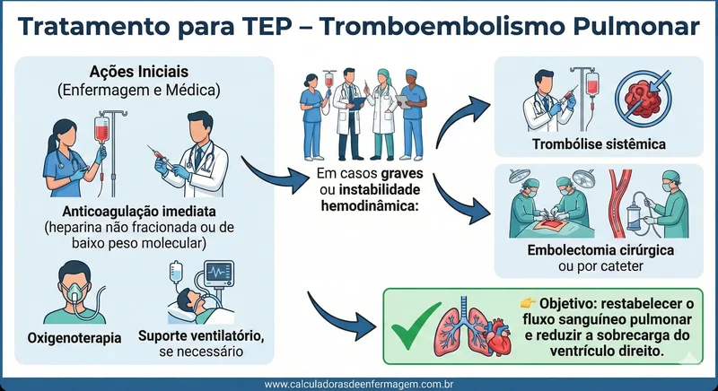
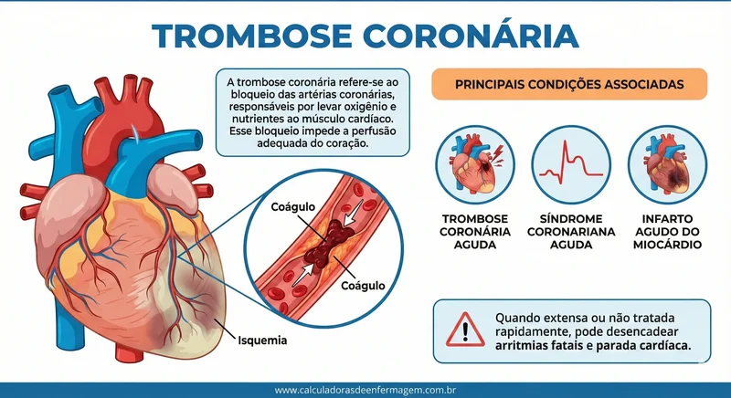
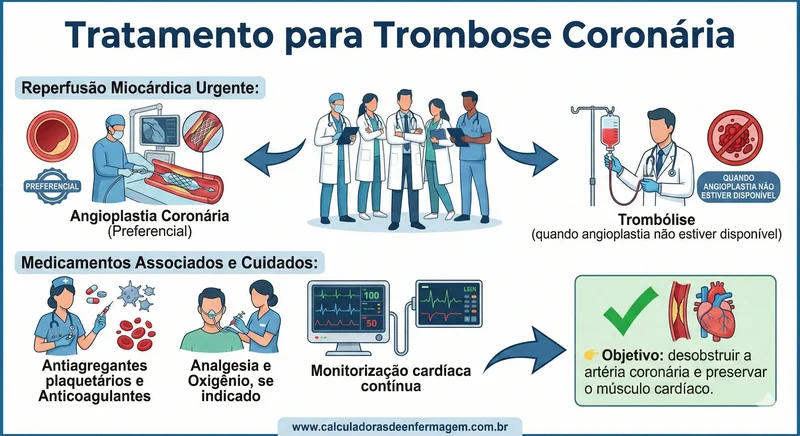
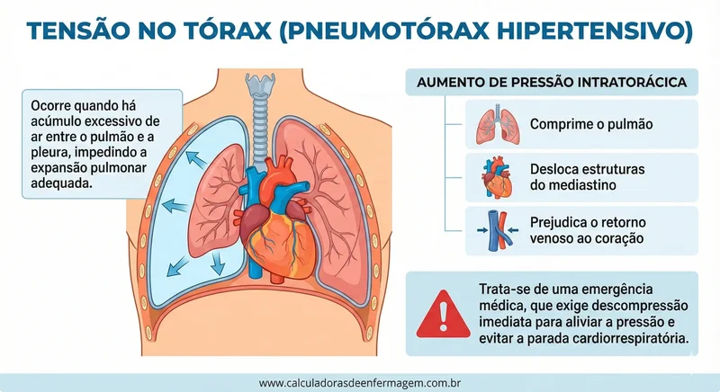
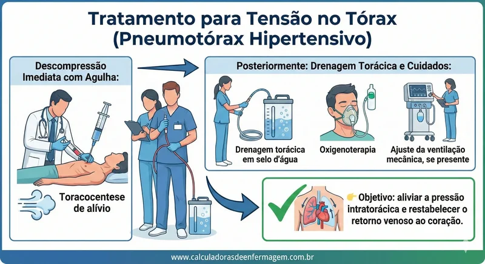
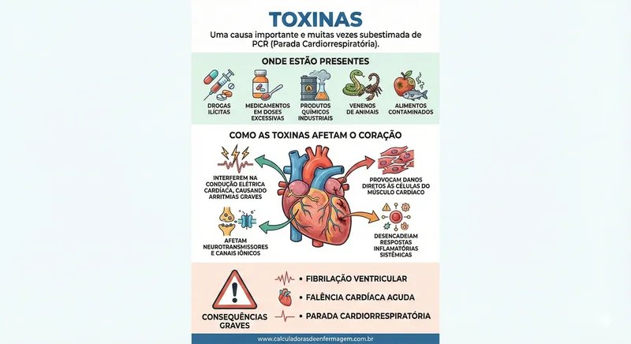
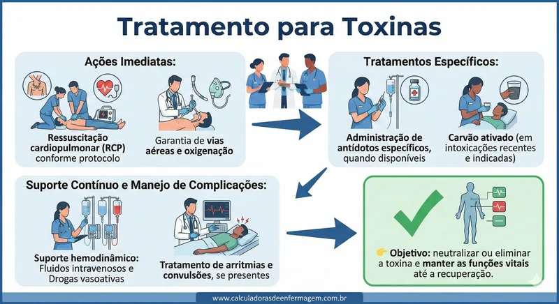

As 5 causas prováveis da parada cardíorespiratória que começam com a letra "T" são: pneumotórax hipertensivo, tamponamento cardíaco, toxinas e trombose. Essas causas podem ser facilmente lembradas usando a sigla “5Ts”. É importante considerá-las no manejo da reversão da parada cardiorespiratória, pois representam condições potencialmente reversíveis que podem levar à parada.

As 5 Ts: Causas Reversíveis de Parada Cardiorrespiratória
Durante o atendimento à parada cardiorrespiratória (PCR), é fundamental identificar rapidamente as causas prováveis, pois muitas delas podem ser tratadas de forma imediata. Para facilitar a memorização, utiliza-se o mnemônico 5 Ts, que representa cinco condições clínicas potencialmente reversíveis que começam com a letra "T":
- Tamponamento cardíaco
- TEP – Tromboembolismo pulmonar
- Trombose coronária
- Tensão no tórax (pneumotórax hipertensivo)
- Toxinas
O reconhecimento precoce dessas causas aumenta significativamente as chances de reversão da PCR e de sobrevida do paciente.
1. Tamponamento Cardíaco
O tamponamento cardíaco ocorre quando há acúmulo anormal de líquido — como sangue ou fluido pericárdico — dentro da cavidade pericárdica, comprimindo o coração e dificultando seu enchimento e bombeamento adequado.

Fisiopatologia
Tratamento (Pericardiocentese)Principais causas:
- Hemorragia intrapericárdica
- Pericardite
- Trauma torácico
Esse aumento de pressão sobre o coração reduz o débito cardíaco e pode evoluir rapidamente para parada cardiorrespiratória se não for tratado.
2. TEP – Tromboembolismo Pulmonar
O tromboembolismo pulmonar (TEP) é caracterizado pela obstrução dos vasos sanguíneos dos pulmões por um coágulo sanguíneo, interrompendo o fluxo sanguíneo e comprometendo a oxigenação.


Pode estar associado a:
- Embolia pulmonar
- Tromboembolismo pulmonar agudo
- Hipertensão pulmonar grave
A sobrecarga aguda do ventrículo direito pode levar rapidamente ao colapso hemodinâmico e à PCR.
3. Trombose Coronária
A trombose coronária refere-se ao bloqueio das artérias coronárias, responsáveis por levar oxigênio e nutrientes ao músculo cardíaco. Esse bloqueio impede a perfusão adequada do coração.


Principais condições associadas:
- Trombose coronária aguda
- Síndrome coronariana aguda
- Infarto agudo do miocárdio
Quando extensa ou não tratada rapidamente, pode desencadear arritmias fatais e parada cardíaca.
4. Tensão no Tórax (Pneumotórax Hipertensivo)
A tensão no tórax, causada pelo pneumotórax hipertensivo, ocorre quando há acúmulo excessivo de ar entre o pulmão e a pleura, impedindo a expansão pulmonar adequada.


Esse aumento de pressão intratorácica:
- Comprime o pulmão
- Desloca estruturas do mediastino
- Prejudica o retorno venoso ao coração
Trata-se de uma emergência médica, que exige descompressão imediata para aliviar a pressão e evitar a parada cardiorrespiratória.
5. Toxinas
As toxinas representam uma causa importante e muitas vezes subestimada de PCR. Substâncias tóxicas podem estar presentes em:


- Drogas ilícitas
- Medicamentos em doses excessivas
- Produtos químicos industriais
- Venenos de animais
- Alimentos contaminados
Como as toxinas afetam o coração:
- Interferem na condução elétrica cardíaca, causando arritmias graves
- Provocam danos diretos às células do músculo cardíaco
- Afetam neurotransmissores e canais iônicos
- Desencadeiam respostas inflamatórias sistêmicas
Esses mecanismos podem levar à fibrilação ventricular, falência cardíaca aguda e parada cardiorrespiratória.
Conclusão
As 5 Ts das causas reversíveis de PCR fazem parte da avaliação sistemática durante o suporte avançado de vida. Identificá-las rapidamente permite intervenções direcionadas, aumentando as chances de sucesso na ressuscitação.
Agora que você já conhece as 5 Hs e as 5 Ts da parada cardiorrespiratória, é possível compreender melhor a importância do diagnóstico rápido e da atuação eficiente em situações de emergência.